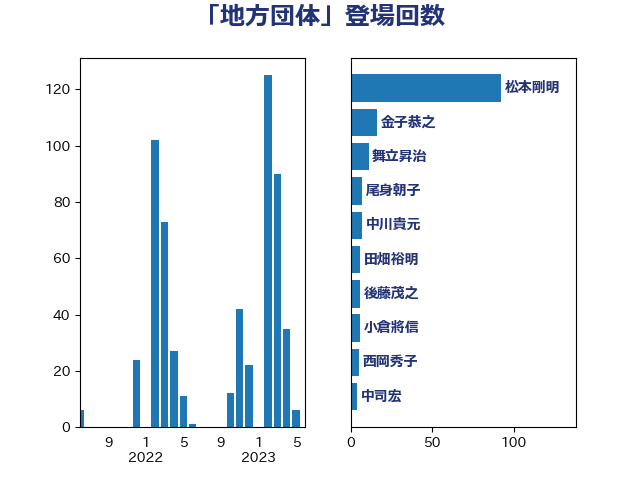

単語「地方団体」

| 松本剛明 | 自由民主党 | 92 回 |
| 金子恭之 | 自由民主党 | 16 回 |
| 舞立昇治 | 自由民主党 | 11 回 |
| 尾身朝子 | 自由民主党 | 7 回 |
| 中川貴元 | 自由民主党 | 7 回 |
| 田畑裕明 | 自由民主党 | 6 回 |
| 後藤茂之 | 自由民主党 | 6 回 |
| 小倉將信 | 自由民主党 | 6 回 |
| 西岡秀子 | 国民民主党 | 5 回 |
| 中司宏 | 日本維新の会 | 4 回 |
| おおつき紅葉 | 立憲民主党 | 4 回 |
| 岸真紀子 | 立憲民主党 | 3 回 |
| 岸田文雄 | 自由民主党 | 3 回 |
| 寺田稔 | 自由民主党 | 3 回 |
| 伊東信久 | 日本維新の会 | 3 回 |
| 輿水恵一 | 公明党 | 2 回 |
| 片山大介 | 日本維新の会 | 2 回 |
| 湯原俊二 | 立憲民主党 | 2 回 |
| 武田良太 | 自由民主党 | 2 回 |
| 森屋宏 | 自由民主党 | 2 回 |
| 本田顕子 | 自由民主党 | 2 回 |
| 堀井巌 | 自由民主党 | 2 回 |
| 鳩山二郎 | 自由民主党 | 1 回 |
| 鈴木庸介 | 立憲民主党 | 1 回 |
| 鈴木俊一 | 自由民主党 | 1 回 |
| 野田聖子 | 自由民主党 | 1 回 |
| 野田国義 | 立憲民主党 | 1 回 |
| 野村哲郎 | 自由民主党 | 1 回 |
| 道下大樹 | 立憲民主党 | 1 回 |
| 谷公一 | 自由民主党 | 1 回 |
| 舩後靖彦 | れいわ新選組 | 1 回 |
| 自見はなこ | 自由民主党 | 1 回 |
| 石川香織 | 立憲民主党 | 1 回 |
| 浅田均 | 日本維新の会 | 1 回 |
| 江島潔 | 自由民主党 | 1 回 |
| 永岡桂子 | 自由民主党 | 1 回 |
| 本村伸子 | 日本共産党 | 1 回 |
| 山本香苗 | 公明党 | 1 回 |
| 山本佐知子 | 自由民主党 | 1 回 |
| 守島正 | 日本維新の会 | 1 回 |
| 北側一雄 | 公明党 | 1 回 |
| 加藤勝信 | 自由民主党 | 1 回 |
| 伊波洋一 | 無所属 | 1 回 |
| 上田清司 | 国民民主党 | 1 回 |